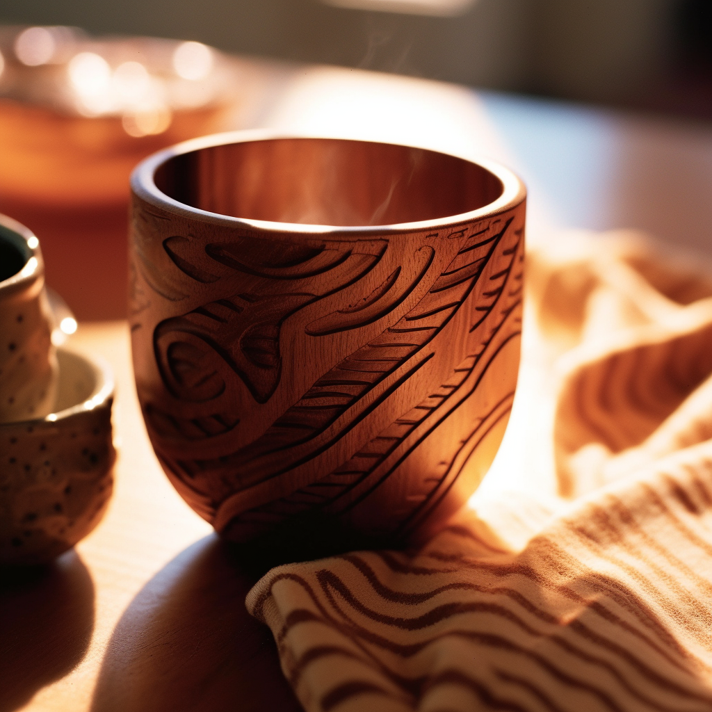

陶盤
陶盤是一種常見的食器，結合了實用性、美感和文化特色。它在日常生活中發揮著重要的角色，同時也是陶瓷藝術的一部分，展現人類對於美食和美學的追求。
陶碗
陶碗是一種實用而具有藝術價值的食器，它不僅滿足了人們的生活需求，還展現了陶瓷藝術的美感和文化特色。
陶甕
陶甕是一種具有歷史和實用價值的陶瓷容器。它承載著人們的儲存需求，展現了陶瓷製作的技術和美學，同時也反映了人類對於傳統工藝和文化的重視。

陶杯
陶杯是一種常見的飲用容器，結合了實用性、美感和文化特色。它在日常生活中扮演重要的角色，也是陶瓷藝術的一部分，展現人類對於飲食文化和美學的追求。
木製餐具
以客家木工技藝製作而成，溫暖質感和自然木紋賦予您的餐點獨特的風味。
木杯
我們的木杯以純木材精心打磨而成，保留了木材的天然紋理和溫潤觸感，讓您享受到喝飲料時木材散發的淡淡香氣。
藺草籃
藺草籃是客家人民常用的傳統器具之一，我們的藺草籃選用優質的藺草編織而成。
藍染桌巾
桌巾採用傳統的藍染工藝，展現了藍染獨特的圖案和細膩的紋理，為您的餐桌增添了深邃而富有藝術感的氛圍。